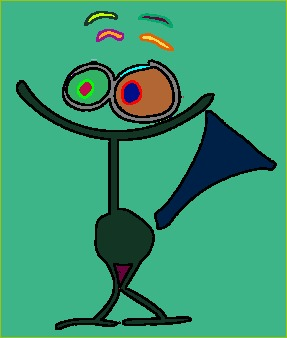
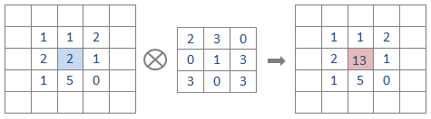

Departamento de Ciência da Computação
- IME - USP
“As soon as we started programming, we found to our surprise that
it wasn’t as easy to get programs right as we had thought. Debugging had to be discovered.
I can remember the exact instant when I realized that a large part
of my life from then on was going to be spent in finding mistakes in my own programs.”
Maurice Wilkes discovers debugging, 1949
O objetivo desse segundo exercício-programa (EP) é treinar:
Neste EP vocês escreverão um programa que lê de um arquivo que contém uma representação de uma imagem colorida no formato Portable pixmap. A partir dessa representação o programa
Executáveis deste EP estão disponíveis aqui: pintor-linux32, pintor-linux64, pintor-macosx, e pintor-windows. Para executar esses programas é necessário que o OpenGL esteja instalado.
A propósito, este EP é uma adaptação do EP2 de MAC0122 em 2012 de autoria do professor Carlos Hitoshi Morimoto.
Para acompanhar o que está descrito aqui, talvez seja conveniente baixar algum dos executáveis e testar o seu comportamento.
O nome do executável produzido pelo Makefile disponibilizado é ep2. Quando executado através da linha de comando obtemos:
meu_prompt> ./pintor2
./pintor: Uso
meu_prompt> ./pintor <nome arq. imagem>
<nome arq. image> = nome arq. com Portable PixMap Binary.
Isto significa que para executar esse EP é necessário que seja
fornecida na linha de comando o nome de um arquivo com uma imagem no
formato Portable
Pixmap Binary. Alguns arquivos com este formato estão disponíveis
na página do EP.
Fornecendo ao programa um arquivo com uma imagem veremos no shell as mensagens
meu_prompt> ./pintor grauna.ppm
carregueImagemPPM: Arquivo '../ppm/grauna.ppm' com a imagem foi aberto.
Comentario: #Created with GIMP
A imagem foi carregada e o arquivo '../ppm/grauna.ppm' foi fechado.
Grupos de pixels de uma mesma regiao:
Grupo 0 tem 1246 pixels
Grupo 1 tem 76030 pixels
Grupo 2 tem 193 pixels
Grupo 3 tem 67 pixels
Grupo 4 tem 194 pixels
Grupo 5 tem 62 pixels
Grupo 6 tem 1 pixels
Grupo 7 tem 176 pixels
Grupo 8 tem 73 pixels
Grupo 9 tem 200 pixels
Grupo 10 tem 73 pixels
Grupo 11 tem 1 pixels
Grupo 12 tem 6 pixels
Grupo 13 tem 6160 pixels
Grupo 14 tem 738 pixels
Grupo 15 tem 64 pixels
Grupo 16 tem 1645 pixels
Grupo 17 tem 793 pixels
Grupo 18 tem 1 pixels
Grupo 19 tem 1 pixels
Grupo 20 tem 1 pixels
Grupo 21 tem 1 pixels
Grupo 22 tem 139 pixels
Grupo 23 tem 183 pixels
Grupo 24 tem 120 pixels
Grupo 25 tem 4824 pixels
Grupo 26 tem 242 pixels
Grupo 27 tem 1 pixels
Grupo 28 tem 2 pixels
Grupo 29 tem 1 pixels
Grupo 30 tem 3646 pixels
Grupo 31 tem 2 pixels
Grupo 32 tem 1 pixels
Grupo 33 tem 1 pixels
Grupo 34 tem 2 pixels
Grupo 35 tem 1 pixels
Grupo 36 tem 2 pixels
Grupo 37 tem 111 pixels
Grupo 38 tem 1 pixels
Grupo 39 tem 1 pixels
Tecle: 'a' para (a)umentar o limiar das bordas
'b' para mostrar as (b)ordas (pinteImagem, pinteRegioes)
'd' para (d)iminuir o limiar das bordas
'g' para (g)ravar a imagem atual em um arquivo (graveImagem)
'l' para (l)impar a tela (pinteImagem)
'o' para mostrar a imagem (o)riginal (copieImagem)
'r' para mostrar as (r)egioes (pinteImagem, pinteRegioes)
's' para (s)egmentar a imagem (freeRegioes, segmenteImagem, pinteRegioes)
'x' para e(x)it (quit)
Clique: em um pixel com
botao esquerdo para alterar a cor da regiao (repinteRegiao)
botao direito para alterar a cor (repinteRegioes).
e uma janela é aberta exibindo a imagem lida do arquivo.
Chamaremos de imagem original a imagem que foi lida do arquivo e de imagem corrente a que está sendo exibida na janela. Durante a execução do programa essas duas imagens podem ou não ser iguais. A imagem original nunca será alterada, já a imagem corrente poderá ser editada: pintada, repintada, apagada, ...
Com o programa sendo executado, ao teclarmos 'r', o shell apresenta as mensagens:
AVISO: graphic: chamando a funcao pinteImagem.
AVISO: graphic: voltei da funcao pinteImagem.
AVISO: graphic: chamando a funcao pinteRegioes.
AVISO: graphic: voltei da funcao pinteRegioes.
Tecle: 'a' para (a)umentar o limiar das bordas
'b' para mostrar as (b)ordas (pinteImagem, pinteRegioes)
'd' para (d)iminuir o limiar das bordas
'g' para (g)ravar a imagem atual em um arquivo (graveImagem)
'l' para (l)impar a tela (pinteImagem)
'o' para mostrar a imagem (o)riginal (copieImagem)
'r' para mostrar as (r)egioes (pinteImagem, pinteRegioes)
's' para (s)egmentar a imagem (freeRegioes, segmenteImagem, pinteRegioes)
'x' para e(x)it (quit)
Clique: em um pixel com
botao esquerdo para alterar a cor da regiao (repinteRegiao)
botao direito para alterar a cor (repinteRegioes).
As mensagens indicam quais funções do seu EP estão sendo chamadas pelo módulo graphic.c.
Isto será útil durante a fase de desenvolvimento do seu EP.
Enquanto isto, na janela, a imagem corrente exibida passa a ser uma em que cada região é
pintada com uma cor. Idealmente as cores seriam todas diferentes, entretanto dependendo
do número de regiões podemos ter regiões diferentes apresentadas
com uma mesma cor. No caso da imagem grauna.ppm o programa encontrou 39 regiões
(39 grupos de pixels).
Para a imagem grauna.ppm anterior uma possível coloração de suas regiões é

Ao teclarmos 'b', o shell apresenta as mensagens:
AVISO: graphic: chamando a funcao pinteImagem.
AVISO: graphic: voltei da funcao pinteImagem.
AVISO: graphic: chamando a funcao pinteRegioes.
AVISO: graphic: voltei da funcao pinteRegioes.
Tecle: 'a' para (a)umentar o limiar das bordas
'b' para mostrar as (b)ordas (pinteImagem, pinteRegioes)
'd' para (d)iminuir o limiar das bordas
'g' para (g)ravar a imagem atual em um arquivo (graveImagem)
'l' para (l)impar a tela (pinteImagem)
'o' para mostrar a imagem (o)riginal (copieImagem)
'r' para mostrar as (r)egioes (pinteImagem, pinteRegioes)
's' para (s)egmentar a imagem (freeRegioes, segmenteImagem, pinteRegioes)
'x' para e(x)it (quit)
Clique: em um pixel com
botao esquerdo para alterar a cor da regiao (repinteRegiao)
botao direito para alterar a cor (repinteRegioes).
Enquanto isto, na janela, a imagem corrente exibida passa a ser uma em que
cada região de 'borda' é pintada com uma cor e apenas essas regiões são exibidas.
Idealmente as cores seriam todas diferentes, entretanto dependendo
do número de regiões de borda podemos ter regiões diferentes apresentadas
com uma mesma cor.
Para a imagem grauna.ppm uma possível coloração de suas regiões de borda é
Cada vez que teclamos 'b' a imagem corrente passa a ser uma em que as regiões de "borda" são repintadas e apenas elas são exibidas. Por exemplo:
Ao teclar 'o' o shell apresenta as mensagens
AVISO: graphic: chamando a funcao copieImagem.
AVISO: graphic: voltei da funcao copieImagem.
Tecle: 'a' para (a)umentar o limiar das bordas
'b' para mostrar as (b)ordas (pinteImagem, pinteRegioes)
'd' para (d)iminuir o limiar das bordas
'g' para (g)ravar a imagem atual em um arquivo (graveImagem)
'l' para (l)impar a tela (pinteImagem)
'o' para mostrar a imagem (o)riginal (copieImagem)
'r' para mostrar as (r)egioes (pinteImagem, pinteRegioes)
's' para (s)egmentar a imagem (freeRegioes, segmenteImagem, pinteRegioes)
'x' para e(x)it (quit)
Clique: em um pixel com
botao esquerdo para alterar a cor da regiao (repinteRegiao)
botao direito para alterar a cor (repinteRegioes).
e a imagem original voltará a ser a imagem corrente e será mostrada na janela:
Quando teclamos 'l' a janela é limpa, ou seja, todos os pixels da tela ficam com a cor branca, que neste EP é a cor de fundo (BACK_GROUND em cores.h) e no shell vemos as mensagens:
AVISO: graphic: chamando a funcao pinteImagem.
AVISO: graphic: voltei da funcao pinteImagem.
Tecle: 'a' para (a)umentar o limiar das bordas
'b' para mostrar as (b)ordas (pinteImagem, pinteRegioes)
'd' para (d)iminuir o limiar das bordas
'g' para (g)ravar a imagem atual em um arquivo (graveImagem)
'l' para (l)impar a tela (pinteImagem)
'o' para mostrar a imagem (o)riginal (copieImagem)
'r' para mostrar as (r)egioes (pinteImagem, pinteRegioes)
's' para (s)egmentar a imagem (freeRegioes, segmenteImagem, pinteRegioes)
'x' para e(x)it (quit)
Clique: em um pixel com
botao esquerdo para alterar a cor da regiao (repinteRegiao)
botao direito para alterar a cor (repinteRegioes).
Ao teclarmos 'g' o shell apresenta uma mensagem pedindo que digitemos o nome de um arquivo onde desejamos que a imagem que vemos na janela seja gravada. A seguir o texto em vermelho é o nome do arquivo que foi digitado.
AVISO: graphic: chamando a funcao graveImagem.
Digite o nome do arquivo em que a imagem deve ser gravada: imagem-mais-bonita.ppm
graveImagemPPM: A imagem foi salva no arquivo: 'imagem-mais-bonita.ppm'
AVISO: graphic: voltei da funcao graveImagem.
Tecle: 'a' para (a)umentar o limiar das bordas
'b' para mostrar as (b)ordas (pinteImagem, pinteRegioes)
'd' para (d)iminuir o limiar das bordas
'g' para (g)ravar a imagem atual em um arquivo (graveImagem)
'l' para (l)impar a tela (pinteImagem)
'o' para mostrar a imagem (o)riginal (copieImagem)
'r' para mostrar as (r)egioes (pinteImagem, pinteRegioes)
's' para (s)egmentar a imagem (freeRegioes, segmenteImagem, pinteRegioes)
'x' para e(x)it (quit)
Clique: em um pixel com
botao esquerdo para alterar a cor da regiao (repinteRegiao)
botao direito para alterar a cor (repinteRegioes).
Quando clicamos em um ponto da imagem com o botão esquerdo do mouse, a região a que esse ponto pertence é repintada. As mensagens vistas no shell são:
AVISO: graphic: chamando a funcao repinteRegiao.
AVISO: graphic: voltei da funcao repinteRegiao.
Tecle: 'a' para (a)umentar o limiar das bordas
'b' para mostrar as (b)ordas (pinteImagem, pinteRegioes)
'd' para (d)iminuir o limiar das bordas
'g' para (g)ravar a imagem atual em um arquivo (graveImagem)
'l' para (l)impar a tela (pinteImagem)
'o' para mostrar a imagem (o)riginal (copieImagem)
'r' para mostrar as (r)egioes (pinteImagem, pinteRegioes)
's' para (s)egmentar a imagem (freeRegioes, segmenteImagem, pinteRegioes)
'x' para e(x)it (quit)
Clique: em um pixel com
botao esquerdo para alterar a cor da regiao (repinteRegiao)
botao direito para alterar a cor (repinteRegioes).
Por exemplo, clicando com o botao esquerdo do mouse algumas vezes sobre um ponto na região da cauda
da graúna da imagem
Quando clicamos em um ponto da imagem com o botão direto do mouse, todas as regiões que têm a mesma cor que a região a que o ponto pertence são repintadas. As mensagens vistas no shell são:
AVISO: graphic: chamando a funcao repinteRegioes.
AVISO: graphic: voltei da funcao repinteRegioes.
Tecle: 'a' para (a)umentar o limiar das bordas
'b' para mostrar as (b)ordas (pinteImagem, pinteRegioes)
'd' para (d)iminuir o limiar das bordas
'g' para (g)ravar a imagem atual em um arquivo (graveImagem)
'l' para (l)impar a tela (pinteImagem)
'o' para mostrar a imagem (o)riginal (copieImagem)
'r' para mostrar as (r)egioes (pinteImagem, pinteRegioes)
's' para (s)egmentar a imagem (freeRegioes, segmenteImagem, pinteRegioes)
'x' para e(x)it (quit)
Clique: em um pixel com
botao esquerdo para alterar a cor da regiao (repinteRegiao)
botao direito para alterar a cor (repinteRegioes).
Por exemplo, clicando com o botao direito do mouse algumas vezes sobre um ponto na região da cauda
da graúna da imagem
A maneira que o programa determina as regiões da imagem depende de um número inteiro que chamamos de limiar. Esse limiar pode ser aumentado, teclando-se em 'a', ou diminuído, teclando-se em 'd'. As mensagens vistas no shell são:
AVISO: graphic: aumentando limiar.
AVISO: graphic: limiar atual = 120
AVISO: graphic: novo limiar = 121
AVISO: graphic: limiar aumentado.
Tecle: 'a' para (a)umentar o limiar das bordas
'b' para mostrar as (b)ordas (pinteImagem, pinteRegioes)
'd' para (d)iminuir o limiar das bordas
'g' para (g)ravar a imagem atual em um arquivo (graveImagem)
'l' para (l)impar a tela (pinteImagem)
'o' para mostrar a imagem (o)riginal (copieImagem)
'r' para mostrar as (r)egioes (pinteImagem, pinteRegioes)
's' para (s)egmentar a imagem (freeRegioes, segmenteImagem, pinteRegioes)
'x' para e(x)it (quit)
Clique: em um pixel com
botao esquerdo para alterar a cor da regiao (repinteRegiao)
botao direito para alterar a cor (repinteRegioes).
AVISO: graphic: diminuindo limiar.
AVISO: graphic: limiar atual = 121
AVISO: graphic: novo limiar = 120
AVISO: graphic: limiar diminuido.
Tecle: 'a' para (a)umentar o limiar das bordas
'b' para mostrar as (b)ordas (pinteImagem, pinteRegioes)
'd' para (d)iminuir o limiar das bordas
'g' para (g)ravar a imagem atual em um arquivo (graveImagem)
'l' para (l)impar a tela (pinteImagem)
'o' para mostrar a imagem (o)riginal (copieImagem)
'r' para mostrar as (r)egioes (pinteImagem, pinteRegioes)
's' para (s)egmentar a imagem (freeRegioes, segmenteImagem, pinteRegioes)
'x' para e(x)it (quit)
Clique: em um pixel com
botao esquerdo para alterar a cor da regiao (repinteRegiao)
botao direito para alterar a cor (repinteRegioes).
Depois de alterado o valor do limiar, podemos fazer com que o programa determine as regiões da imagem corrente utilizando esse novo limiar teclando 's'. Por exemplo, após diminuirmos o limiar do valor default, que é 120, para 50 e depois teclarmos 's', veremos no shell as mensagens:
AVISO: graphic: chamando a funcao freeRegioes.
AVISO: graphic: voltei da funcao freeRegioes.
AVISO: graphic: chamando a funcao segmenteImagem.
Grupos de pixeis de uma mesma regiao:
Grupo 0 tem 1246 pixels
Grupo 1 tem 75187 pixels
Grupo 2 tem 1 pixels
Grupo 3 tem 3 pixels
Grupo 4 tem 2 pixels
Grupo 5 tem 219 pixels
Grupo 6 tem 2 pixels
Grupo 7 tem 60 pixels
Grupo 8 tem 230 pixels
Grupo 9 tem 3 pixels
Grupo 10 tem 1 pixels
Grupo 11 tem 1 pixels
Grupo 12 tem 58 pixels
Grupo 13 tem 2 pixels
Grupo 14 tem 1 pixels
Grupo 15 tem 3 pixels
Grupo 16 tem 1 pixels
Grupo 17 tem 1 pixels
Grupo 18 tem 1 pixels
Grupo 19 tem 1 pixels
Grupo 20 tem 1 pixels
Grupo 21 tem 1 pixels
Grupo 22 tem 226 pixels
Grupo 23 tem 3 pixels
Grupo 24 tem 64 pixels
Grupo 25 tem 3 pixels
Grupo 26 tem 226 pixels
Grupo 27 tem 64 pixels
Grupo 28 tem 3 pixels
Grupo 29 tem 1 pixels
Grupo 30 tem 4 pixels
Grupo 31 tem 1 pixels
Grupo 32 tem 1 pixels
Grupo 33 tem 1 pixels
Grupo 34 tem 1 pixels
Grupo 35 tem 2 pixels
Grupo 36 tem 6990 pixels
Grupo 37 tem 6 pixels
Grupo 38 tem 3 pixels
Grupo 39 tem 691 pixels
Grupo 40 tem 1 pixels
Grupo 41 tem 1 pixels
Grupo 42 tem 55 pixels
Grupo 43 tem 1614 pixels
Grupo 44 tem 752 pixels
Grupo 45 tem 1 pixels
Grupo 46 tem 1 pixels
Grupo 47 tem 1 pixels
Grupo 48 tem 1 pixels
Grupo 49 tem 1 pixels
Grupo 50 tem 3 pixels
Grupo 51 tem 1 pixels
Grupo 52 tem 5 pixels
Grupo 53 tem 1 pixels
Grupo 54 tem 155 pixels
Grupo 55 tem 1 pixels
Grupo 56 tem 2 pixels
Grupo 57 tem 196 pixels
Grupo 58 tem 118 pixels
Grupo 59 tem 4629 pixels
Grupo 60 tem 236 pixels
Grupo 61 tem 2 pixels
Grupo 62 tem 1 pixels
Grupo 63 tem 3 pixels
Grupo 64 tem 2 pixels
Grupo 65 tem 1 pixels
Grupo 66 tem 1 pixels
Grupo 67 tem 1 pixels
Grupo 68 tem 3 pixels
Grupo 69 tem 1 pixels
Grupo 70 tem 1 pixels
Grupo 71 tem 2 pixels
Grupo 72 tem 1 pixels
Grupo 73 tem 2 pixels
Grupo 74 tem 3614 pixels
Grupo 75 tem 2 pixels
Grupo 76 tem 1 pixels
Grupo 77 tem 1 pixels
Grupo 78 tem 1 pixels
Grupo 79 tem 1 pixels
Grupo 80 tem 1 pixels
Grupo 81 tem 1 pixels
Grupo 82 tem 1 pixels
Grupo 83 tem 1 pixels
Grupo 84 tem 15 pixels
Grupo 85 tem 1 pixels
Grupo 86 tem 1 pixels
Grupo 87 tem 2 pixels
Grupo 88 tem 1 pixels
Grupo 89 tem 1 pixels
Grupo 90 tem 1 pixels
Grupo 91 tem 2 pixels
Grupo 92 tem 2 pixels
Grupo 93 tem 2 pixels
Grupo 94 tem 2 pixels
Grupo 95 tem 1 pixels
Grupo 96 tem 1 pixels
Grupo 97 tem 1 pixels
Grupo 98 tem 8 pixels
Grupo 99 tem 23 pixels
Grupo 100 tem 2 pixels
Grupo 101 tem 1 pixels
Grupo 102 tem 1 pixels
Grupo 103 tem 1 pixels
Grupo 104 tem 1 pixels
Grupo 105 tem 1 pixels
Grupo 106 tem 2 pixels
Grupo 107 tem 1 pixels
Grupo 108 tem 2 pixels
Grupo 109 tem 12 pixels
Grupo 110 tem 2 pixels
Grupo 111 tem 2 pixels
Grupo 112 tem 1 pixels
Grupo 113 tem 1 pixels
Grupo 114 tem 2 pixels
Grupo 115 tem 3 pixels
Grupo 116 tem 1 pixels
Grupo 117 tem 1 pixels
Grupo 118 tem 2 pixels
Grupo 119 tem 1 pixels
Grupo 120 tem 1 pixels
Grupo 121 tem 1 pixels
Grupo 122 tem 1 pixels
Grupo 123 tem 1 pixels
Grupo 124 tem 1 pixels
Grupo 125 tem 1 pixels
Grupo 126 tem 100 pixels
Grupo 127 tem 1 pixels
Grupo 128 tem 2 pixels
Grupo 129 tem 1 pixels
Grupo 130 tem 1 pixels
Grupo 131 tem 1 pixels
Grupo 132 tem 3 pixels
Grupo 133 tem 2 pixels
Grupo 134 tem 3 pixels
Grupo 135 tem 1 pixels
Grupo 136 tem 3 pixels
Grupo 137 tem 1 pixels
Grupo 138 tem 4 pixels
Grupo 139 tem 1 pixels
Grupo 140 tem 1 pixels
Grupo 141 tem 2 pixels
Grupo 142 tem 1 pixels
Grupo 143 tem 1 pixels
Grupo 144 tem 3 pixels
Grupo 145 tem 2 pixels
Grupo 146 tem 2 pixels
Grupo 147 tem 1 pixels
Grupo 148 tem 1 pixels
Grupo 149 tem 2 pixels
Grupo 150 tem 1 pixels
Grupo 151 tem 1 pixels
Grupo 152 tem 2 pixels
Grupo 153 tem 1 pixels
Grupo 154 tem 2 pixels
Grupo 155 tem 3 pixels
Grupo 156 tem 5 pixels
Grupo 157 tem 1 pixels
Grupo 158 tem 3 pixels
Grupo 159 tem 2 pixels
AVISO: graphic: voltei da funcao segmenteImagem.
AVISO: graphic: chamando a funcao pinteRegioes.
AVISO: graphic: voltei da funcao pinteRegioes.
Tecle: 'a' para (a)umentar o limiar das bordas
'b' para mostrar as (b)ordas (pinteImagem, pinteRegioes)
'd' para (d)iminuir o limiar das bordas
'g' para (g)ravar a imagem atual em um arquivo (graveImagem)
'l' para (l)impar a tela (pinteImagem)
'o' para mostrar a imagem (o)riginal (copieImagem)
'r' para mostrar as (r)egioes (pinteImagem, pinteRegioes)
's' para (s)egmentar a imagem (freeRegioes, segmenteImagem, pinteRegioes)
'x' para e(x)it (quit)
Clique: em um pixel com
botao esquerdo para alterar a cor da regiao (repinteRegiao)
botao direito para alterar a cor (repinteRegioes).
No caso, a nova imagem corrente exibida poderá ser algo como
Finalmente, ao teclarmos 'x', a execução do programa é encerrada. As mensagens vistas no shell são:
AVISO: graphic: chamando a funcao quit. Tchau! Tchau! Fui!
Para desenvolver o EP precisamos representar imagens no computador. Isto é feito através das chamadas imagens digitais.
Uma imagem digital ou simplesmente
imagem é basicamente uma
matriz, com, digamos, altura height (número de linhas) e largura width
(número de colunas).
Cada elemento da matriz é chamado de pixel
(
Na sua forma mais básica podemos representar um pixel como
aceso ("branco"), ou apagado ("preto").
As imagens em que cada pixel possui apenas um dentre dois
"níveis" possíveis são chamadas de imagens binárias.
Imagens binárias podem ser representadas de maneira bastante compacta,
basta reservarmos apenas 1
Em geral, no entanto, dois nívels são insuficientes para representar o que costumamos chamar de imagens em preto e branco, pois estas, em geral, possuem vários níveis ou tons de cinza. Uma forma comum de representar uma imagem com vários tons de cinza é reservando um byte (8 bits) para cada pixel. Desta forma podemos representar imagens com até 256 níveis de cinza por pixel. Chamamos as imagens em que cada pixel pode ter vários tons de cinza de imagens com nível de cinza.
Já uma imagem colorida requer ainda mais informação para cada pixel. A representação mais comum é obtida decompondo uma cor nas componentes básicas red (vermelho), green (verde) e blue (azul) ou RGB. Vermelho, verde e azul são chamadas de cores primárias, já que com combinações dessas cores podemos representar um espectro grande de cores. Para a maioria das aplicações essas três cores são suficientes, pois a visão humana é tricromática. Aqui, o método que armazenaremos imagens coloridas será o True Color (24 bits).
A segmentação de imagens é um passo importante deste EP [Gonzalez e Woods, Digital Image Processing]. A segmentação subdivide uma imagem em regiões ou objetos que a compõem. O nível de detalhe em que a subdivisão é realizada depende do problema a ser resolvido.
Neste EP, uma imagem será segmentada em regiões (conexas) em relação a pixels de borda. Cada região será formada por pixels de borda ou apenas por pixels que não são de borda e são limitados por bordas ou pela fronteira da imagem. Dessa forma, um componente central desse EP utilizado para segmentar imagens será a função
que recebe a posição [lin][col] de um pixel de uma imagem img e retorna TRUE se o pixel [lin][col] é de borda em relação ao valor do inteiro limiar e retorna FALSE em caso contrário. Você deverá implementar a função pixelBorda(). A seguir descrevemos como essa função deve fazer o seu serviço.static void pixelBorda(Imagem *img, int limiar, int col, int lin);
De uma maneira geral, em detecção de bordas (edge detection) são identificados os pixels da imagem em que há uma mudança brusca ou descontínua na luminosidade (luminous intensity). No EP, a luminosidade relativa (relative luminance) de um pixel [lin][col] é calculada pela função luminosidadePixel(), que está implementada no esqueleto do EP.
static double luminosidadePixel(Imagem *img, int col, int lin);
Para determinar se um pixel [lin][col] é de borda utilizaremos o filtro de Sobel (Sobel operator). No método será necessário o cálculo de duas grandezas, os chamados gradientes horizontal gX e o gradiente vertical gY no pixel [lin][col]. A seguir denotaremos por lum[i][j] a luminosidade relativa de um pixel [i][j]. Os valores de gX e gY serão calculados da seguinte maneira:
gX = lum[lin-1][col+1] + 2*lum[lin][col+1] + lum[lin+1][col+1]
- lum[lin-1][col-1] - 2*lum[lin][col-1] - lum[lin+1][col-1]
gY = lum[lin+1][col-1] + 2*lum[lin+1][col] + lum[lin+1][col+1]
- lum[lin-1][col-1] - 2*lum[lin-1][col] - lum[lin-1][col+1]
É claro que nas adições acimas só devem ser levados em consideração
os termos para os quais a posição do pixel na imagem faz sentido.
Por exemplo, para lin = 0, é um erro computarmos os
termos que envolvem lum[lin-1][col].
Calculados os gradientes gX e gY no pixel [lin][col], a função pixelBorda() declara o pixel [lin][col] de borda em relação a um dado valor limiar se
√gX * gX + gY * gY > limiar,
em caso contrário, o pixel [lin][col] não é de borda
[Processamento de imagens: Detecção de bordas].
Outra maneira de obtermos gX e gY através da convolução da luminidade do pixel [lin][col] com as matrizes a seguir [Understanding Convolutions]. Em Processamento de imagens: Detecção de bordas há uma imagem que exemplifica a operação de convolução.
0 1 2 +----+----+----+ 0 | -1 | 0 | +1 | +----+----+----+ 1 | -2 | 0 | +2 | +----+----+----+ 2 | -1 | 0 | +1 | +----+----+----+ |
0 1 2 +----+----+----+ 0 | -1 | -2 | -1 | +----+----+----+ 1 | 0 | 0 | 0 | +----+----+----+ 2 | +1 | +2 | +1 | +----+----+----+ |
As imagens a seguir ilustram a operação de convolução. Na imagem da esquerda, kernel representa uma das matrizes acima, input faz as vezes da luminosidade de cada pixel, o pixel azul escuro é o da posição [lin][col] e o pixel em vermelho representa o valor de gX ou de gY. A imagem da direita apresenta um exemplo numérico de convolução. Ambas as imagens foram copiadas de River Trail documentation.

|
|  |
Para simplificar a representação de imagens nesse exercício-programa e torná-la independente de plataforma, dispositivo e formato, decidimos considerar a seguinte definição para uma imagem RGB. As estruturas usadas para representarmos imagens, pixels, células de listas de pixels e células de listas de regiões estão todas definidas no arquivo imagem.h.
O tipo Pixel que foi adotado tem o formato abaixo.
Copiado de imagem.hO vetor cor é uma representação True Color da cor do pixel:/*-------------------------------------------------------------*/ /* indices de uma cor/canal */ enum cores { RED /* = 0 */, GREEN /* = 1 */, BLUE /* = 2 */ }; /* Byte = valores entre 0 e 255 (8 bits) */ typedef unsigned char Byte; /*-------------------------------------------------------------*/ /* pixel True Color */ /* http://en.wikipedia.org/wiki/True_Color#True_color_.2824-bit.29 */ typedef struct pixel Pixel; struct pixel { Byte cor[3]; /* cor[RED] eh um valor entre 0 e 255 */ /* cor[GREEN] eh um valor entre 0 e 255 */ /* cor[BLUE] eh um valor entre 0 e 255*/ CelRegiao *regiao; /* ponteiro para a celula da regiao do pixel se == NULL indica que o pixel nao pertence a regiao alguma */ };
As imagens original (lida do arquivo) e corrente (que está sendo exibida na janela) serão representadas através de objetos do tipo Imagem.
Copiado de imagem.hAssim, uma imagem será representada através de dois números inteiros height e width e de um ponteiro pixel para uma matriz com height linhas e width colunas. Cada posição [lin][col] da matriz é do tipo Pixel e contém a cor do pixel e um ponteiro regiao para a célula da sua região./*------------------------------------------------------------*/ /* representacao para uma imagem colorida */ typedef struct imagem Imagem; struct imagem { int width; /* no. de colunas (width/largura) da imagem em pixels */ int height; /* no. de linhas (height/altura) da imagem em pixels */ Pixel **pixel; /* matriz height x width de pixels com os níveis RGB */ };
Cada célula de uma lista de pixels é do tipo CelPixel e tem a forma
Copiado de imagem.hAs listas de pixels serão criadas pela função pixelsRegiao()./*-------------------------------------------------------------*/ /* celula de um lista de pixels */ typedef struct celPixel CelPixel; struct celPixel { int col, lin; /* [lin][col] e a posicao do pixel */ CelPixel *proxPixel; /* ponteiro para o proximo pixel */ };
Cada célula da lista de regiões é do tipo CelRegiao e é da forma
Copiado de imagem.hO campo nPixels armazena o número de pixels na região. De maneira idêntica a tipo Pixel, a cor dos pixels de uma região é representada por um vetor cor, sendo que/*-------------------------------------------------------------*/ enum bool { FALSE /* = 0 */, TRUE /* = 1 */ }; /* Bool = valores FALSE e TRUE */ typedef Byte Bool; /*-------------------------------------------------------------*/ /* celula de uma lista de regioes */ typedef struct celRegiao CelRegiao; struct celRegiao { int nPixels; /* no. de pixels na regiao */ Byte cor[3]; /* cor dos pixels na regiao */ Bool borda; /* indica se a regiao e ou nao de borda */ CelPixel *iniPixels; /* ponteiro para a lista de pixels na regiao */ CelRegiao *proxRegiao; /* ponteiro para a proxima regiao */ };
A lista de regiões será criada pela função segmenteRegiao().
Aqui é apresentada uma visão geral dos arquivos que compõem o EP2.
Este exercício-programa é formado por 9 arquivos 8-[.
O diretório com esqueleto EP contém,
além desses 9 arquivos um Makefile para gerar o executável do programa.
Os arquivos no diretório com o esqueleto são
esqueleto> ls -la -rw-r--r--@ 720 Sep 4 13:49 Makefile -rw-r--r--@ 2147 Sep 4 13:23 cores.h -rw-r--r--@ 12557 Sep 4 13:25 graphic.c -rw-r--r--@ 486 Sep 4 13:13 graphic.h -rw-r--r--@ 18205 Sep 4 11:50 imagem.c -rw-r--r--@ 4176 Sep 4 13:25 imagem.h -rw-r--r--@ 7703 Sep 4 13:24 io.c -rw-r--r--@ 355 Sep 4 13:24 io.h -rw-r--r--@ 5011 Sep 4 13:24 main.c -rw-r--r--@ 442 Sep 4 13:05 main.h
Os únicos arquivos que deverão ser manipulados e entregues são imagem.c e main.c; os demais arquivos não devem ser alterados.
Os arquivos imagem.c e main.c contêm os protótipos das funções que deverão ser feitas, algumas funções completas e comentários com uma especificação do comportamento de cada função. Para compilar o programa e gerar o executável basta, na linha de comando, digitar make. Os que usam o Code::Blocks devem ler a seção Projetos da Aula Dirigida de Introdução ao Code::Blocks. Compile o programa assim que baixar o esqueleto e vocês verão as mensagens a seguir e um executável de nome pintor será gerado. Dependendo da versão do compilador as mensagens pode ser ligeiramente diferentes.
esqueleto> make gcc -Wall -O2 -ansi -pedantic -Wno-unused-result -c main.c main.c:164:1: warning: ‘mostreUso’ defined but not used [-Wunused-function] mostreUso (char *nomePrograma) ^ gcc -Wall -O2 -ansi -pedantic -Wno-unused-result -c graphic.c gcc -Wall -O2 -ansi -pedantic -Wno-unused-result -c imagem.c imagem.c:191:1: warning: ‘setPixel’ defined but not used [-Wunused-function] setPixel(Imagem *img, int col, int lin, Byte cor[]) ^ imagem.c:317:1: warning: ‘pixelBorda’ defined but not used [-Wunused-function] pixelBorda(Imagem *img, int col, int lin, int limiar) ^ imagem.c:542:1: warning: ‘pixelsRegiao’ defined but not used [-Wunused-function] pixelsRegiao(Imagem *img, int limiar, int col, int lin, CelRegiao *regiao) ^ imagem.c:575:1: warning: ‘mallocSafe’ defined but not used [-Wunused-function] mallocSafe (size_t nbytes) ^ imagem.c:607:1: warning: ‘luminosidadePixel’ defined but not used [-Wunused-function] luminosidadePixel(Imagem *img, int col, int lin) ^ gcc -Wall -O2 -ansi -pedantic -Wno-unused-result -c io.c gcc main.o graphic.o imagem.o io.o -o pintor -lGL -lGLU -lglut -lmNote que, apesar de no esqueleto o corpo das funções que deverão ser feitas estar vazio, o EP compila sem erros de sintaxe e com 6 avisos devido a funções que não foram utilizadas (-Wunused-function).
Agora, passamos à descrição dos arquivos.
Apenas os arquivos
imagem.c e main.c deverão ser manipulados e
entregues. Não altere os nomes dos arquivos.
meu_prompt> make gcc -Wall -O2 -ansi -pedantic -Wno-unused-result -c main.c gcc -Wall -O2 -ansi -pedantic -Wno-unused-result -c graphic.c gcc -Wall -O2 -ansi -pedantic -Wno-unused-result -c imagem.c gcc -Wall -O2 -ansi -pedantic -Wno-unused-result -c io.c gcc main.o graphic.o imagem.o io.o -o pintor -lGL -lGLU -lglut -lmOs que usam o Code::Blocks devem ler a seção Projetos da Aula Dirigida de Introdução ao Code::Blocks.
Aqui estão listados os protótipos das funções fornecidas e que você utilizará em alguns dos trechos de código que deverá escrever. O comportamento das funções está descrito nos comentários que precedem as funções nos arquivos do esqueleto.
No módulo io.c temos as funções
void graveImagemPPM(char *nomeArquivo, Imagem *img); Imagem * carregueImagemPPM(char *nomeArquivo);
No módulo imagem.c temos as funções
static void * mallocSafe(size_t nbytes); static double luminosidadePixel(Imagem *img, int col, int lin);
No módulo main.c
static void mostreUso(char *nomePrograma);
Aqui estão listados os protótipos das funções que você deverá implementar. O comportamento das funções está descrito nos comentários que precedem as funções nos arquivos do esqueleto. Você pode escrever mais funções auxiliares se achar necessário.
No módulo main.c
Na função main() (main.c) há 3 variáveis que já foram declaradasint main(int argc, char *argv[]); void quit(Imagem *tela, Imagem *img, CelRegiao *iniRegioes); void graveImagem(Imagem *img);
A variável imgOriginal é um ponteiro para a estrutura que representa a imagem original, que é a imagem fornecida ao programa através de um arquivo. Depois de inicializada, a imagem original não deverá ser mais alterada. A variável tela é um ponteiro para a estrutura que representa a imagem corrente ou atual. Essa é a imagem que será constantemente exibida pela janela do programa. Já iniRegioes é um ponteiro para a lista de regiões (conexas), onde cada célula representa uma região formada apenas por pixels de borda ou apenas formada por pixels limitados por bordas e pelas fronteiras da imagem. Essas três variáveis são passadas para as funções gráficas através da chamadaImagem *imgOriginal = NULL; /* ponteiro para a imagem original */ Imagem *tela = NULL; /* ponteiro para a imagem corrente ou atual */ CelRegiao *iniRegioes = NULL; /* ponteiro para a lista de regioes */
feita no final do main(). Essa será a última instrução executada pela main()./* 6 passe a bola para a parte grafica */ myInit(&argc, argv, tela, imgOriginal, iniRegioes);
No módulo imagem.c
static void setPixel(Imagem *img, int col, int lin, Byte cor[]); static Bool pixelBorda(Imagem *img, int limiar, int col, int lin); static int pixelsRegiao(Imagem *img, int limiar, int col, int lin, CelRegiao *regiao); Imagem * mallocImagem(int width, int height); void freeImagem(Imagem *img); Pixel getPixel(Imagem *img, int col, int lin); void freeRegioes(CelRegiao *iniRegioes); void copieImagem(Imagem *destino, Imagem *origem); void pinteImagem(Imagem *img, Byte cor[]); void pinteRegioes(Imagem *img, CelRegiao *iniRegioes, Bool borda); void repinteRegiao(Imagem *img, int col, int lin, Byte cor[]); void repinteRegioes(Imagem *img, CelRegiao *iniRegioes, int col, int lin, Byte cor[]); CelRegiao * segmenteImagem(Imagem *img, int limiar);